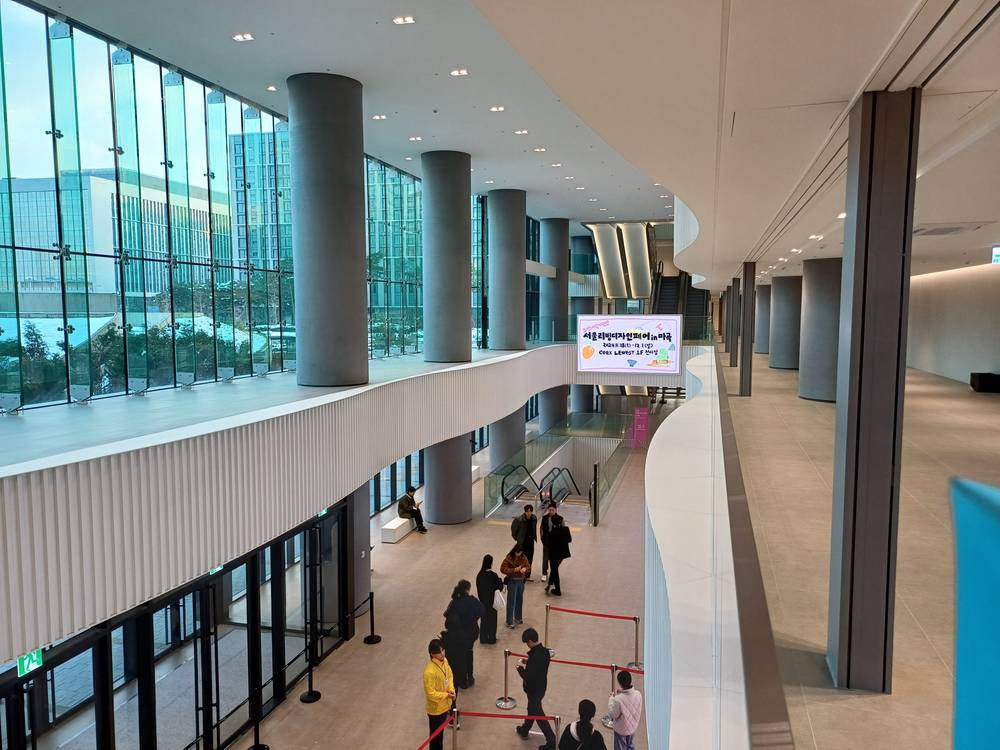

사회적기업 국제포럼, 주민이 운영하는 마을 태양광·공공자산 청년주택 등 국내외 8개 사례 나눠

고용노동부·한국사회적기업진흥원, 사회적기업육성법 19년 맞아 의료·돌봄·주거·에너지 분야의 지역 역할 점검
주민이 함께 운영하는 태양광 발전소로 마을 소득을 만든 사례 등, 사회적기업과 주민 조직이 지역 생활 기반을 채워 온 국내외 경험이 10일 서울에서 소개됐다. 고용노동부와 한국사회적기업진흥원은 이날 서울 강서구 코엑스마곡 컨벤션센터에서 '2026 사회적기업 국제포럼'을 열고, 2007년 사회적기업육성법 시행 뒤 19년 동안 사회적기업이 의료·돌봄과 주거, 에너지 분야에서 해 온 역할을 짚었다. 국내 발표에서는 구양리 마을회가 주민이 운영하는 태양광 발전소로 마을 소득을 만든 경험을 내놨고, 살림의료복지사회적협동조합과 꿈고래사회적협동조합, 경북시민재단은 주민 출자형 의료·돌봄, 발달장애인 가족 지원, 지역 안 자금·일자리 순환 사례를 공유했다. 해외 사례로는 쓰지 않던 공공자산을 청년 임대주택으로 바꾼 대만 나인플로어 코리빙, 대학생과 노인이 함께 사는 주거시설을 운영해 온 네덜란드 후마니타스 데벤테르 등이 발표됐다. 경제협력개발기구(OECD) 아말 슈브로 사회적경제·혁신팀장은 영상 기조강연에서 고령화와 지역소멸을 겪는 한국에서 사회연대경제의 역할을 키우려면 여러 주체가 힘을 모아야 한다고 말했다.
시민에너지 관점
이날 소개된 8개 사례 가운데 에너지는 구양리 마을 태양광 하나였지만 그 의미는 작지 않다. 마을 발전소의 꾸준한 수입은 돌봄·주거처럼 인구가 줄어드는 지역의 필수 서비스를 떠받칠 재원이 될 수 있기 때문이다. 사회적경제가 에너지까지 맡기엔 자본과 전문성이 모자란다는 지적도 있지만, 독일의 에너지협동조합들이 시민 출자로 지붕 태양광부터 시작해 커 온 것처럼 작은 마을 발전소가 출발점이 될 수 있다. 정부는 사회적기업과 협동조합이 재생에너지 사업의 주인이 되도록 금융과 계통 접속을 함께 뒷받침해야 한다.
출처: 헤럴드경제 2026-11-10 김용훈 원문 보기
社会的企業国際フォーラム、住民が運営する集落の太陽光や公共資産を使った若者住宅など国内外8事例を共有
雇用労働部と韓国社会的企業振興院、社会的企業育成法19年を迎え医療・介護・住まい・エネルギー分野での地域の役割を点検
住民が共同で運営する太陽光発電所で集落の所得を生み出した例など、社会的企業や住民組織が地域の暮らしの基盤を支えてきた国内外の経験が10日、ソウルで紹介された。韓国の雇用労働部と韓国社会的企業振興院はこの日、ソウル江西区のCOEXマゴク・コンベンションセンターで「2026社会的企業国際フォーラム」を開き、2007年の社会的企業育成法施行から19年間、社会的企業が医療・介護、住まい、エネルギーの分野で果たしてきた役割を振り返った。国内の発表では、九陽里（クヤンリ）の集落会が住民運営の太陽光発電所で集落の所得をつくった経験を紹介し、サルリム医療福祉社会的協同組合、クムゴレ社会的協同組合、慶北市民財団は、住民出資型の医療・介護、発達障害者の家族支援、地域内での資金と雇用の循環の事例を共有した。海外からは、使われていなかった公共資産を若者向け賃貸住宅に変えた台湾のナインフロア・コリビング、大学生と高齢者が共に暮らす住宅を運営してきたオランダのフマニタス・デーフェンテルなどが発表した。経済協力開発機構（OECD）のアマル・シュブロ社会的経済・イノベーションチーム長はビデオ基調講演で、高齢化と地域消滅に直面する韓国で社会連帯経済の役割を大きくするには、多様な主体が力を合わせる必要があると述べた。
市民エネルギーの視点
この日紹介された8事例のうちエネルギーは九陽里の集落太陽光ひとつだったが、その意味は小さくない。集落発電所の安定した収入は、介護や住まいのように人口が減る地域に欠かせないサービスを支える財源になり得るからだ。社会的経済がエネルギーまで担うには資本も専門性も足りないという指摘もあるが、ドイツのエネルギー協同組合が市民出資で屋根の太陽光から始めて成長してきたように、小さな集落発電所が出発点になり得る。政府は社会的企業や協同組合が再エネ事業の持ち主になれるよう、金融と系統接続を併せて後押しすべきだ。
出典: 헤럴드경제 2026-11-10 김용훈 原文を読む
社会企业国际论坛分享国内外8个案例，包括居民运营的村庄光伏、利用公共资产建青年住房等
韩国雇佣劳动部与社会企业振兴院在《社会企业育成法》实施19年之际，检视医疗、照护、住房和能源领域的地方作用
10日在首尔，社会企业和居民组织支撑地方生活基础的国内外经验得到集中介绍，其中包括居民共同运营光伏电站为村庄创造收入的案例。韩国雇佣劳动部和韩国社会企业振兴院当天在首尔江西区COEX麻谷会展中心举办"2026社会企业国际论坛"，回顾了2007年《社会企业育成法》实施以来19年间，社会企业在医疗照护、住房和能源领域发挥的作用。在国内案例发表中，九阳里村民会介绍了通过居民运营的光伏电站创造村庄收入的经验；萨林医疗福利社会合作社、梦鲸社会合作社和庆北市民财团则分享了居民出资型医疗照护、发育障碍者家庭支持、资金与就业在地方内部循环的案例。海外案例包括把闲置公共资产改造为青年租赁住房的台湾九楼共居，以及运营大学生与老人同住住宅的荷兰代芬特尔Humanitas等。经济合作与发展组织（OECD）社会经济与创新团队负责人阿马尔·舒布罗在视频主旨演讲中表示，在面临老龄化和地方消亡的韩国，要扩大社会团结经济的作用，需要多方主体共同发力。
市民能源视角
当天介绍的8个案例中，能源只有九阳里村庄光伏一项，但意义不小。村庄电站稳定的收入，可以成为支撑照护、住房等人口减少地区必需服务的财源。有人认为社会经济要承担能源事业，资本和专业能力都不足；但正如德国能源合作社依靠市民出资从屋顶光伏起步并发展壮大，小小的村庄电站也可以成为起点。政府应在金融和电网接入上一并给予支持，让社会企业和合作社成为可再生能源项目的主人。
来源: 헤럴드경제 2026-11-10 김용훈 查看原文
International Social Enterprise Forum Shares Eight Cases at Home and Abroad, from a Resident-Run Village Solar Plant to Youth Housing in Public Assets
Korea's labour ministry and social enterprise agency review the local role of social enterprises in health, care, housing and energy 19 years after the founding law
Experiences from Korea and abroad of social enterprises and resident groups filling gaps in local life, including a village that earns income from a solar plant run by its residents, were presented in Seoul on the 10th. South Korea's Ministry of Employment and Labor and the Korea Social Enterprise Promotion Agency held the 2026 International Social Enterprise Forum at the Coex Magok Convention Center in Gangseo-gu, reviewing the role social enterprises have played in health and care, housing and energy in the 19 years since the Social Enterprise Promotion Act took effect in 2007. Among the Korean cases, the Guyang-ri village association described how a resident-run solar plant created income for the village, while the Salim Health Welfare Social Cooperative, the Kkumgorae Social Cooperative and the Gyeongbuk Citizens Foundation shared models of resident-funded health and care, support for families of people with developmental disabilities, and keeping money and jobs circulating locally. International cases included Taiwan's Ninefloor Co-living, which turned idle public assets into rental housing for young people, and Humanitas Deventer in the Netherlands, which runs housing where university students and older people live together. In a video keynote, Amal Chevreau, head of the OECD's social economy and innovation team, said that expanding the role of the social and solidarity economy in a Korea facing ageing and regional decline will require many actors to work together.
Citizen Energy View
Only one of the eight cases, the Guyang-ri village solar plant, dealt with energy, but its significance is not small. Steady income from a village power plant can become a funding source for essential services such as care and housing in depopulating areas. Some argue the social economy lacks the capital and expertise to take on energy, yet just as German energy cooperatives grew from citizen-funded rooftop solar, a small village plant can be the starting point. The government should back social enterprises and cooperatives with both finance and grid access so they can become owners of renewable energy projects.
Source: 헤럴드경제 2026-11-10 김용훈 Read the original